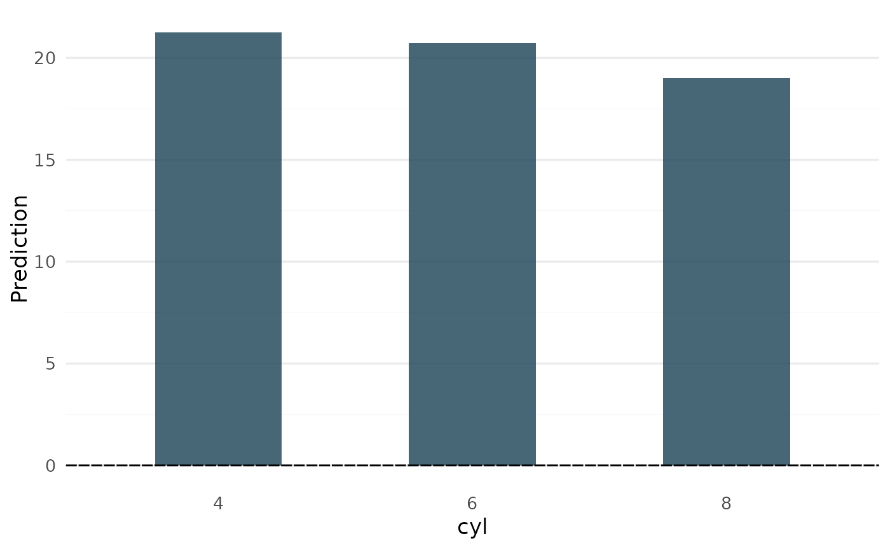

A version of plot_main_effect with the intercept term (horizontal line) added,
resulting in a partial dependence plot.
Arguments
- object
Object of class
glex.- predictor
(
character(1)) predictor names, e.g."x1".- ...
Used for future expansion.
See also
Other Visualization functions:
autoplot.glex_vi(),
autoplot.glex(),
glex_explain()
Examples
if (requireNamespace("randomPlantedForest", quietly = TRUE)) {
library(randomPlantedForest)
# introduce factor variables to show categorical feature handling
mtcars$cyl <- factor(mtcars$cyl)
mtcars$vs <- factor(mtcars$vs)
# Fit forest, get components
set.seed(12)
rpfit <- rpf(mpg ~ cyl + wt + hp + drat + vs, data = mtcars, ntrees = 25, max_interaction = 3)
components <- glex(rpfit, mtcars)
plot_pdp(components, "wt")
plot_pdp(components, "cyl")
}
